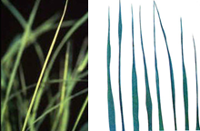

PESTS OF RICE :: Major Pests :: Thrips
| 1. Thrips: Stenchaetothrips biformis (Thripidae: Thysanoptera) Distribution and status: Bangladesh, India, Indonesia, Japan, Malaysia, Sri Lanka, Thailand and Vietnam. Minor but has potential to become major. Host range: Echinochloa sp. |
Damage symptoms:
Both nymphs and adults lacerate the tender leaves and suck the plant sap, causing yellow or silvery streaks on the leaves of young seedlings. Terminal rolling and drying of leaves from tip to base is the typical symptom of attack. It causes damage both in nursery and main field.
 Leaf curling caused by Rice Thrips (IRRI) |
ETL: 60 Nos. per 12 wet hand sweeps in nursery.
|
Management:
|